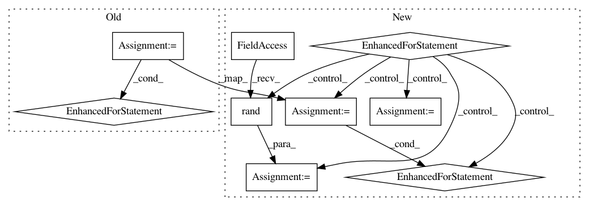

48d65ff340c2190d9d07c454ec314f574d4c886e,tests/test_special_orthogonal_group.py,TestSpecialOrthogonalGroupMethods,test_quaternion_and_rotation_vector,#TestSpecialOrthogonalGroupMethods#,399
Before Change
n = 3
group = self.so[n]
for angle_type in self.elements[3]:
point = self.elements[3][angle_type]
if angle_type in self.angles_close_to_pi[3]:
continue
quaternion = group.quaternion_from_rotation_vector(point)
result = group.rotation_vector_from_quaternion(quaternion)
expected = group.regularize(point)
self.assertTrue(np.allclose(result, expected),
"for point {}:\n"
"result = {};"
" expected = {}.".format(angle_type,
result,
expected))
def test_quaternion_and_rotation_vector_with_angles_close_to_pi(self):
n = 3
group = self.so[n]
After Change
inv_expected))
def test_quaternion_and_rotation_vector(self):
for n in self.n_seq:
group = self.so[n]
if n == 3:
for angle_type in self.elements[3]:
point = self.elements[3][angle_type]
if angle_type in self.angles_close_to_pi[3]:
continue
quaternion = group.quaternion_from_rotation_vector(point)
result = group.rotation_vector_from_quaternion(quaternion)
expected = group.regularize(point)
self.assertTrue(np.allclose(result, expected),
"for point {}:\n"
"result = {};"
" expected = {}.".format(angle_type,
result,
expected))
else:
point = group.random_uniform()
self.assertRaises(
AssertionError,
lambda: group.quaternion_from_rotation_vector(point))
fake_quaternion = np.random.rand(1, n + 1)
self.assertRaises(
AssertionError,
lambda: group.rotation_vector_from_quaternion(
fake_quaternion))
def test_quaternion_and_rotation_vector_with_angles_close_to_pi(self):
n = 3
group = self.so[n]
In pattern: SUPERPATTERN
Frequency: 3
Non-data size: 9
Instances
Project Name: geomstats/geomstats
Commit Name: 48d65ff340c2190d9d07c454ec314f574d4c886e
Time: 2018-04-24
Author: ninamio78@gmail.com
File Name: tests/test_special_orthogonal_group.py
Class Name: TestSpecialOrthogonalGroupMethods
Method Name: test_quaternion_and_rotation_vector
Project Name: keras-team/keras
Commit Name: 9d15c9611570bd3ecab52ed924c69a60ac3b2784
Time: 2016-01-03
Author: julien@fhtagn.net
File Name: tests/keras/layers/test_convolutional.py
Class Name:
Method Name: test_upsampling_2d
Project Name: nipy/dipy
Commit Name: 2e448864f54e5d8040221a1bcfa3492a55cc8465
Time: 2015-01-22
Author: marc.cote.19@gmail.com
File Name: dipy/segment/tests/test_metric.py
Class Name:
Method Name: test_distance_matrix